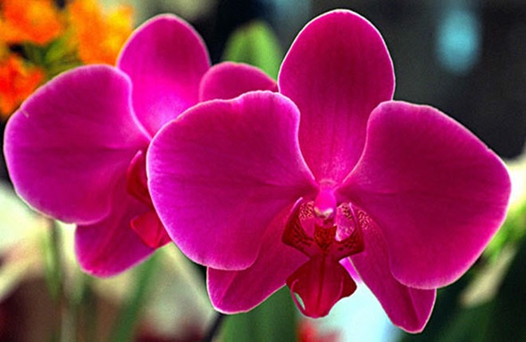

Las orquídeas u orquidáceas (nombre científico Orchidaceae) son una familia de plantas monocotiledóneas que se distinguen por la complejidad de sus flores y por sus interacciones ecológicas con los agentes polinizadores y con los hongos con los que forman micorrizas. La familia comprende aproximadamente 25.000 (algunas fuentes informan de 30.000) especies, y quizá otros 60.000 híbridos y variedades producidas por los horticultores, por lo que resulta ser una de las familias con mayor riqueza de especies entre las angiospermas. Pueden ser reconocidas por sus flores de simetría fuertemente bilateral, en las que la pieza media del verticilo interno de tépalos —llamada labelo— está profundamente modificada, y el o los estambres están fusionados al estilo.
Su labelo imita al abdomen de una abeja hembra, atrayendo a abejas macho para que polinicen la flor. Sorprendente. Las flores de esta especie de orquídea son únicas, no solo por su singular belleza, color y formas excepcionales, sino también por la efectividad que poseen para atraer insectos. Su labelo imita al abdomen de una abeja hembra, atrayendo a abejas macho para que polinicen la flor.
Estas orquídeas forman en ramilletes desde un corto rizoma, con un paquete denso de tallos. No tienen pseudobulbos. Con cada tallo desarrolla una hoja grande, delgada y picuda con una costilla media claramente definida. Estas hojas glabras de un color de verde oscuro a claro sustituyen las funciones del pseudobulbo ausente teniendo funciones de almacenamiento de nutrientes. Son puntiagudas con macro (punta breve). Los tallos florales se desarrollan erectos. Se pueden encontrar entre las raíces de algunas especies epífitas, colgando debajo de la planta. Las flores terminales con largas espuelas tienen básicamente una forma triangular. Las flores se abren individualmente ó sucesivamente. Pero si hay más de un capullo floral en el racimo, abren entonces con largos intervalos. Estas flores tienen un aspecto extraño debido a los largos apéndices en cada sépalo. Los pétalos son pequeños y gruesos. El labio es pequeño y no visible. La parte basal y carnosa del labio (hipo hilo) es hendida. La parte terminal (epiciclo) es redondeada y cóncava. Los márgenes del periantio a menudo son denticulares. Hay una bien desarrollada columna con dos polinias.
Esta singular especie de orquídea simula la forma de una garza o garceta en vuelo con increíble realismo. Son endémicas de China, Japón, Corea y Rusia. Es terrestre, con un tallo delgado que posee de 3 a 7 hojas. Su flor es sencillamente fascinante.
La Caleana mejor, también llamada pato volador (Flint Duck Orchid) es una pequeña orquídea que florece en el sur de Australia. Esta planta terrestre ofrece una flor notable muy bella, parecida a un pato en vuelo. Se la puede encontraren bosques en eucalipto ribereños o pantanosos y también en los matorrales y brezales cerca de la costa. La planta suele crecer hasta los 50 centímetros y sus flores tienen de 15 a 20 milímetros. Debido a su pequeño tamaño, es una planta difícil de observar en su hábitat natural.
Phalaenopsis es el género de orquídeas más popular por su utilización cómo plantas ornamentales. El género Phalaenopsis, originario del sudeste asiático, comprende a unas sesenta especies de orquídeas cuya forma se asemeja normalmente a las mariposas. De entre esas 60 especies muchas de ellas son híbridos artificiales. Algunas de las especies de Phalaenopsis más que a mariposas parecen asemejarse a pájaros. En estas imágenes pueden observarse algunos de esos ejemplares que recuerdan poderosamente la forma de la cabeza de las aves.